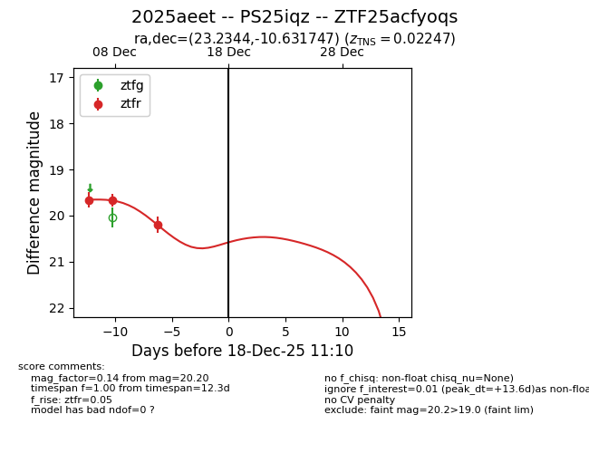
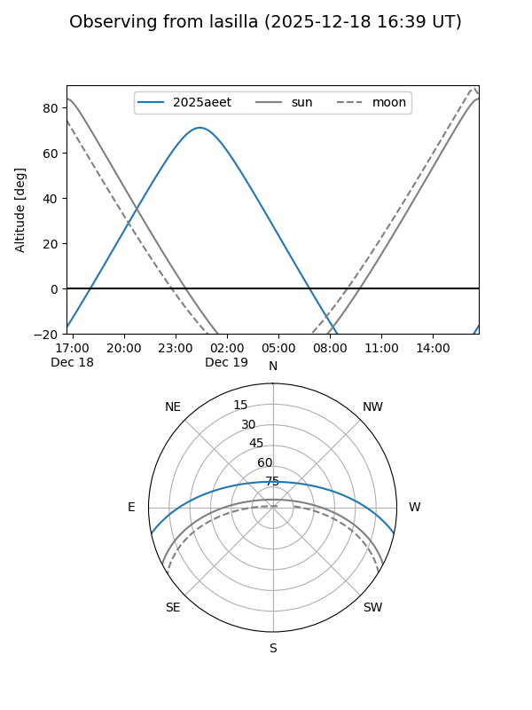
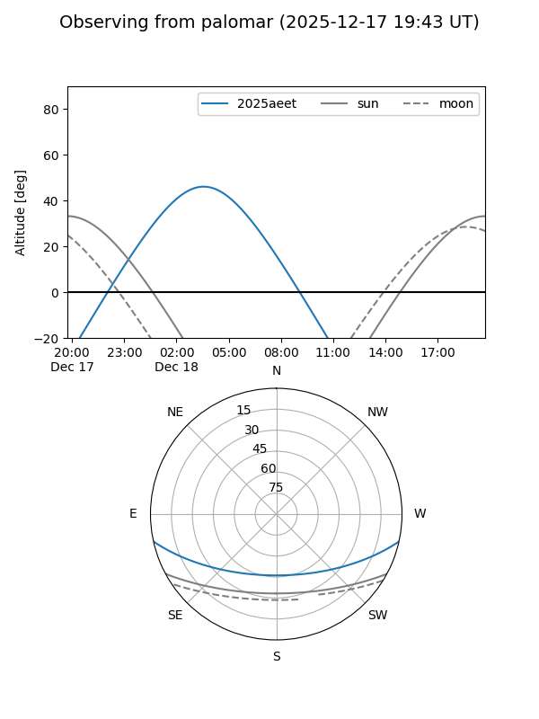
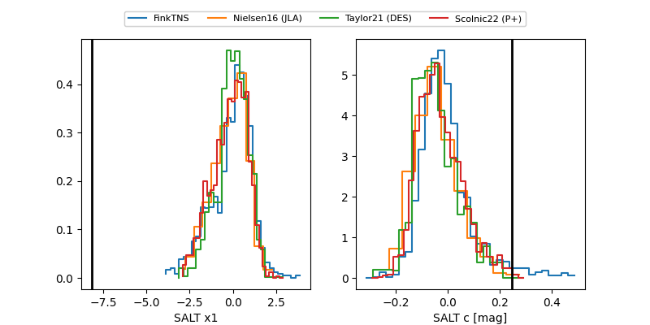

2025aeet
Target 2025aeet at 2025-12-31 18:00
Aliases and brokers:
FINK: link
Lasair: link
ALeRCE: link
TNS: link
YSE: link
alt names
ZTF25acfyoqs (ztf,fink_ztf)
2025aeet (tns,yse)
PS25iqz (panstarrs)
Coordinates:
equatorial (ra, dec) = 23.2344,-10.63175
equatorial (HMS+DMS) = 01:32:56.27,-10:37:54.29
galactic (l, b) = (155.5445,-70.82779)
Flags:
Photometry:
last ztfr=20.20
3 ztfr detections
Lightcurve

Visibility


Additional plots
